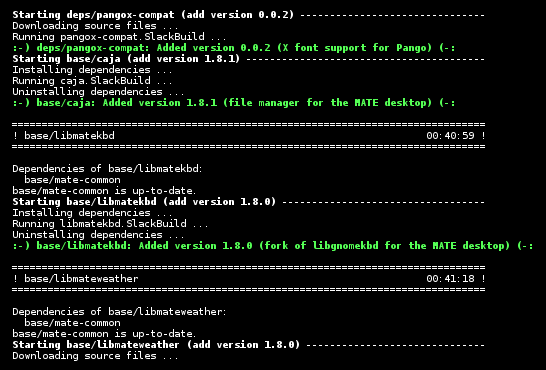

New version! slackrepo-0.2.0, May 2015
 This new version has many new features, improvements and of course bug fixes. See the News page for details.
You can download a prebuilt package here.
What is it?
Slackrepo is a highly automated tool for Slackware users to manage their own package repositories. It builds packages from a repository of SlackBuilds (for example, a clone of SlackBuilds.org), and then outputs the packages to a package repository.
Some notable features are:
- Automatic updating — revisions of the SlackBuild repository determine updates and rebuilds of packages
- Clean building — dependencies are built as a 'tree', not a linear 'queue', and packages that are out-of-date with respect to their dependencies are automatically rebuilt; slackrepo can create a throw-away chroot environment for each build, to help keep your build box safe and clean.
- Quality assurance testing — optional tests can be performed on the SlackBuild files and built packages
- No interaction required — highly automated and suitable for batch building hundreds or even thousands of packages
- Can build from SlackBuilds.org (SBo), Chess Griffin and Willy Sudiarto Raharjo's Mate SlackBuilds (msb), Willy's Cinnamon SlackBuilds (csb), and Matteo Bernardini's forked SBo repository for slackware-current (ponce).
For best results, slackrepo is intended to be run on a "clean" standard Slackware environment (like a "build box" or a virtual machine), with a full installation of Slackware and no additional packages (or very few). You can then use the package repository to install the packages on other hosts (e.g. with slackpkg+). However, it can also be used as a simple command-line package builder and installer.
Slackrepo is not affiliated with, or endorsed by, SlackBuilds.org or Slackware Linux, Inc. The author thanks the awesome people behind those projects for their continuing generosity to the community.
For avoidance of doubt, slackrepo is unrelated to the group communication software named Slack.